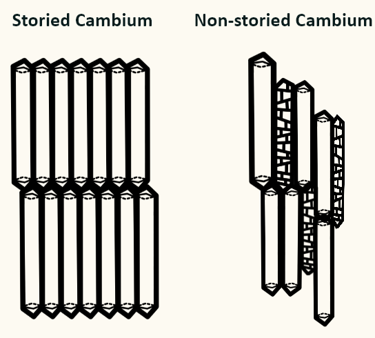
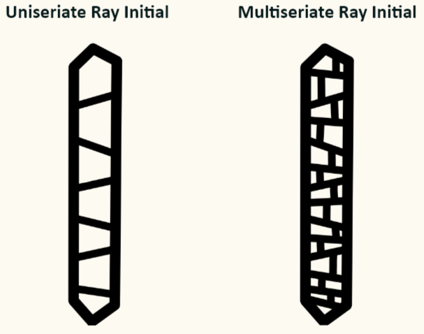

Overview
According to Simpson's Plant Systematics, the vascular cambium is a cylindrical sheath of cells that undergoes primarily tangential divisions, producing secondary xylem (wood) to the inside and secondary phloem (inner bark) to the outside.
There are two main categories of cells within the vascular cambium: fusiform initials and ray initials.
Fusiform Initials
Also known as rocket initials for their shape. These cells will never be sclerified, so they will always have a soft primary wall. Since fusiform initials are meristematic cells, they can produce secondary vascular tissue, parenchyma, fibers, and more. They even produce ray initials!
There are two types of fusiform initials:
Ray Initials
Radially-oriented meristematic cells are produced by fusiform initials. Like fusiform initials, ray initials produce parenchyma, but they do not produce secondary vascular tissues. In addition to storing water and nutrients, ray initials transport them.
There are two types of ray initials
Each block is considered one ray initial. In the drawings above, there are seven ray initials in the uniseriate ray initial and there are twenty-seven ray initials in the multiseriate ray initial.